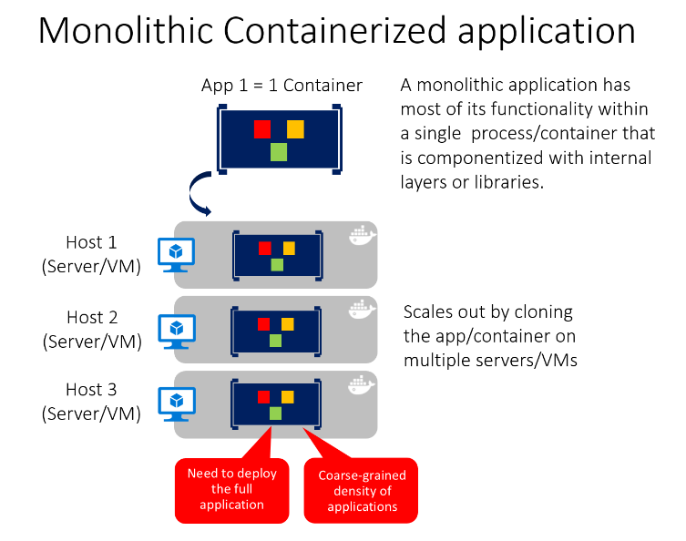

Architecting container and microservice-based applications
Microservices offer great benefits but also raise huge new challenges. Microservice architecture patterns are fundamental pillars when creating a microservice-based application.
Earlier in this guide, you learned basic concepts about containers and Docker. That was the minimum information you needed to get started with containers. Although, even when containers are enablers and a great fit for microservices, they aren’t mandatory for a microservice architecture and many architectural concepts in this architecture section could be applied without containers, too. However, this guidance focuses on the intersection of both due to the already introduced importance of containers.
Enterprise applications can be complex and are often composed of multiple services instead of a single service-based application. For those cases, you need to understand additional architectural approaches, such as the microservices and certain Domain-Driven Design (DDD) patterns plus container orchestration concepts. Note that this chapter describes not just microservices on containers, but any containerized application, as well.
In the container model, a container image instance represents a single process. By defining a container image as a process boundary, you can create primitives that can be used to scale the process or to batch it.
When you design a container image, you’ll see an ENTRYPOINT definition in the Dockerfile. This defines the process whose lifetime controls the lifetime of the container. When the process completes, the container lifecycle ends. Containers might represent long-running processes like web servers, but can also represent short-lived processes like batch jobs, which formerly might have been implemented as Azure WebJobs.
If the process fails, the container ends, and the orchestrator takes over. If the orchestrator was configured to keep five instances running and one fails, the orchestrator will create another container instance to replace the failed process. In a batch job, the process is started with parameters. When the process completes, the work is complete. This guidance drills-down on orchestrators, later on.
You might find a scenario where you want multiple processes running in a single container. For that scenario, since there can be only one entry point per container, you could run a script within the container that launches as many programs as needed. For example, you can use Supervisor or a similar tool to take care of launching multiple processes inside a single container. However, even though you can find architectures that hold multiple processes per container, that approach isn’t very common.
You might want to build a single, monolithically deployed web application or service and deploy it as a container. The application itself might not be internally monolithic, but structured as several libraries, components, or even layers (application layer, domain layer, data-access layer, etc.). Externally, however, it’s a single container—a single process, a single web application, or a single service.
To manage this model, you deploy a single container to represent the application. To increase capacity, you scale out, that is, just add more copies with a load balancer in front. The simplicity comes from managing a single deployment in a single container or VM.

Figure 4-1. Example of the architecture of a containerized monolithic application
You can include multiple components, libraries, or internal layers in each container, as illustrated in Figure 4-1. However, this monolithic pattern might conflict with the container principle “a container does one thing, and does it in one process”, but might be ok for some cases.
The downside of this approach becomes evident if the application grows, requiring it to scale. If the entire application can scale, it isn’t really a problem. However, in most cases, just a few parts of the application are the choke points that requiring scaling, while other components are used less.
For example, in a typical e-commerce application, you likely need to scale the product information subsystem, because many more customers browse products than purchase them. More customers use their basket than use the payment pipeline. Fewer customers add comments or view their purchase history. And you might have only a handful of employees, that need to manage the content and marketing campaigns. If you scale the monolithic design, all the code for these different tasks is deployed multiple times and scaled at the same grade.
There are multiple ways to scale an application-horizontal duplication, splitting different areas of the application, and partitioning similar business concepts or data. But, in addition to the problem of scaling all components, changes to a single component require complete retesting of the entire application, and a complete redeployment of all the instances.
However, the monolithic approach is common, because the development of the application is initially easier than for microservices approaches. Thus, many organizations develop using this architectural approach. While some organizations have had good enough results, others are hitting limits. Many organizations designed their applications using this model because tools and infrastructure made it too difficult to build service-oriented architectures (SOA) years ago, and they did not see the need-until the application grew.
From an infrastructure perspective, each server can run many applications within the same host and have an acceptable ratio of efficiency in resources usage, as shown in Figure 4-2.
Figure 4-2. Monolithic approach: Host running multiple apps, each app running as a container
Monolithic applications in Microsoft Azure can be deployed using dedicated VMs for each instance. Additionally, using Azure virtual machine scale sets, you can easily scale the VMs. Azure App Service can also run monolithic applications and easily scale instances without requiring you to manage the VMs. Since 2016, Azure App Services can run single instances of Docker containers as well, simplifying deployment.
As a QA environment or a limited production environment, you can deploy multiple Docker host VMs and balance them using the Azure balancer, as shown in Figure 4-3. This lets you manage scaling with a coarse-grain approach, because the whole application lives within a single container.
Figure 4-3. Example of multiple hosts scaling up a single container application
Deployment to the various hosts can be managed with traditional deployment techniques. Docker hosts can be managed with commands like docker run or docker-compose performed manually, or through automation such as continuous delivery (CD) pipelines.
There are benefits to using containers to manage monolithic application deployments. Scaling container instances is far faster and easier than deploying additional VMs. Even if you use virtual machine scale sets, VMs take time to start. When deployed as traditional application instances instead of containers, the configuration of the application is managed as part of the VM, which isn’t ideal.
Deploying updates as Docker images is far faster and network efficient. Docker images typically start in seconds, which speeds rollouts. Tearing down a Docker image instance is as easy as issuing a docker stop command, and typically completes in less than a second.
Because containers are immutable by design, you never need to worry about corrupted VMs. In contrast, update scripts for a VM might forget to account for some specific configuration or file left on disk.
While monolithic applications can benefit from Docker, we’re touching only on the benefits. Additional benefits of managing containers come from deploying with container orchestrators, which manage the various instances and lifecycle of each container instance. Breaking up the monolithic application into subsystems that can be scaled, developed, and deployed individually is your entry point into the realm of microservices.
Whether you want to get validation of a container deployed to Azure or when an application is simply a single-container application, Azure App Service provides a great way to provide scalable single-container-based services. Using Azure App Service is simple. It provides great integration with Git to make it easy to take your code, build it in Visual Studio, and deploy it directly to Azure.
Figure 4-4. Publishing a single-container application to Azure App Service from Visual Studio
Without Docker, if you needed other capabilities, frameworks, or dependencies that aren’t supported in Azure App Service, you had to wait until the Azure team updated those dependencies in App Service. Or you had to switch to other services like Azure Service Fabric, Azure Cloud Services, or even VMs, where you had further control and you could install a required component or framework for your application.
Container support in Visual Studio 2017 gives you the ability to include whatever you want in your application environment, as shown in Figure 4-4. Since you’re running it in a container, if you add a dependency to your application, you can include the dependency in your Dockerfile or Docker image.
As also shown in Figure 4-4, the publish flow pushes an image through a container registry. This can be the Azure Container Registry (a registry close to your deployments in Azure and secured by Azure Active Directory groups and accounts), or any other Docker registry, like Docker Hub or an on-premises registry.
In most cases, you can think of a container as an instance of a process. A process doesn’t maintain persistent state. While a container can write to its local storage, assuming that an instance will be around indefinitely would be like assuming that a single location in memory will be durable. You should assume that container images, like processes, have multiple instances or will eventually be killed. If they’re managed with a container orchestrator, you should assume that they might get moved from one node or VM to another.
The following solutions are used to manage persistent data in Docker applications:
From the Docker host, as Docker Volumes:
From remote storage:
From the Docker container:
Docker provides a feature named the overlay file system. This implements a copy-on-write task that stores updated information to the root file system of the container. That information is in addition to the original image on which the container is based. If the container is deleted from the system, those changes are lost. Therefore, while it’s possible to save the state of a container within its local storage, designing a system around this would conflict with the premise of container design, which by default is stateless.
However, the previously introduced Docker Volumes is now the preferred way to handling local data Docker. If you need more information about storage in containers check on Docker storage drivers and About storage drivers.
The following provides more detail about these options:
Volumes are directories mapped from the host OS to directories in containers. When code in the container has access to the directory, that access is actually to a directory on the host OS. This directory is not tied to the lifetime of the container itself, and the directory is managed by Docker and isolated from the core functionality of the host machine. Thus, data volumes are designed to persist data independently of the life of the container. If you delete a container or an image from the Docker host, the data persisted in the data volume isn’t deleted.
Volumes can be named or anonymous (the default). Named volumes are the evolution of Data Volume Containers and make it easy to share data between containers. Volumes also support volume drivers, that allow you to store data on remote hosts, among other options.
Bind mounts are available since a long time ago and allow the mapping of any folder to a mount point in a container. Bind mounts have more limitations than volumes and some important security issues, so volumes are the recommended option.
tmpfs mounts are basically virtual folders that live only in the host’s memory and are never written to the filesystem. They are fast and secure but use memory and are only meant for non-persistent data.
As shown in Figure 4-5, regular Docker volumes can be stored outside of the containers themselves but within the physical boundaries of the host server or VM. However, Docker containers can’t access a volume from one host server or VM to another. In other words, with these volumes, it isn’t possible to manage data shared between containers that run on different Docker hosts, although it could be achieved with a volume driver that supports remote hosts.
Figure 4-5. Volumes and external data sources for container-based applications
In addition, when Docker containers are managed by an orchestrator, containers might “move” between hosts, depending on the optimizations performed by the cluster. Therefore, it isn’t recommended that you use data volumes for business data. But they’re a good mechanism to work with trace files, temporal files, or similar that will not impact business data consistency.
Remote data sources and cache tools like Azure SQL Database, Azure Cosmos DB, or a remote cache like Redis can be used in containerized applications the same way they are used when developing without containers. This is a proven way to store business application data.
Azure Storage. Business data usually will need to be placed in external resources or databases, like Azure Storage. Azure Storage, in concrete, provides the following services in the cloud:
Relational databases and NoSQL databases. There are many choices for external databases, from relational databases like SQL Server, PostgreSQL, Oracle, or NoSQL databases like Azure Cosmos DB, MongoDB, etc. These databases are not going to be explained as part of this guide since they are in a completely different subject.
Service-oriented architecture (SOA) was an overused term and has meant different things to different people. But as a common denominator, SOA means that you structure your application by decomposing it into multiple services (most commonly as HTTP services) that can be classified as different types like subsystems or tiers.
Those services can now be deployed as Docker containers, which solves deployment issues, because all the dependencies are included in the container image. However, when you need to scale up SOA applications, you might have scalability and availability challenges if you’re deploying based on single Docker hosts. This is where Docker clustering software or an orchestrator can help you, as explained in later sections where deployment approaches for microservices are described.
Docker containers are useful (but not required) for both traditional service-oriented architectures and the more advanced microservices architectures.
Microservices derive from SOA, but SOA is different from microservices architecture. Features like large central brokers, central orchestrators at the organization level, and the Enterprise Service Bus (ESB) are typical in SOA. But in most cases, these are anti-patterns in the microservice community. In fact, some people argue that “The microservice architecture is SOA done right.”
This guide focuses on microservices, because a SOA approach is less prescriptive than the requirements and techniques used in a microservice architecture. If you know how to build a microservice-based application, you also know how to build a simpler service-oriented application.
As the name implies, a microservices architecture is an approach to building a server application as a set of small services. That means a microservices architecture is mainly oriented to the back-end, although the approach is also being used for the front end. Each service runs in its own process and communicates with other processes using protocols such as HTTP/HTTPS, WebSockets, or AMQP. Each microservice implements a specific end-to-end domain or business capability within a certain context boundary, and each must be developed autonomously and be deployable independently. Finally, each microservice should own its related domain data model and domain logic (sovereignty and decentralized data management) and could be based on different data storage technologies (SQL, NoSQL) and different programming languages.
What size should a microservice be? When developing a microservice, size shouldn’t be the important point. Instead, the important point should be to create loosely coupled services so you have autonomy of development, deployment, and scale, for each service. Of course, when identifying and designing microservices, you should try to make them as small as possible as long as you don’t have too many direct dependencies with other microservices. More important than the size of the microservice is the internal cohesion it must have and its independence from other services.
Why a microservices architecture? In short, it provides long-term agility. Microservices enable better maintainability in complex, large, and highly-scalable systems by letting you create applications based on many independently deployable services that each have granular and autonomous lifecycles.
As an additional benefit, microservices can scale out independently. Instead of having a single monolithic application that you must scale out as a unit, you can instead scale out specific microservices. That way, you can scale just the functional area that needs more processing power or network bandwidth to support demand, rather than scaling out other areas of the application that don’t need to be scaled. That means cost savings because you need less hardware.
Figure 4-6. Monolithic deployment versus the microservices approach
As Figure 4-6 shows, the microservices approach allows agile changes and rapid iteration of each microservice, because you can change specific, small areas of complex, large, and scalable applications.
Architecting fine-grained microservices-based applications enables continuous integration and continuous delivery practices. It also accelerates delivery of new functions into the application. Fine-grained composition of applications also allows you to run and test microservices in isolation, and to evolve them autonomously while maintaining clear contracts between them. As long as you don’t change the interfaces or contracts, you can change the internal implementation of any microservice or add new functionality without breaking other microservices.
The following are important aspects to enable success in going into production with a microservices-based system:
Of these, only the first three are covered or introduced in this guide. The last two points, which are related to application lifecycle, are covered in the additional Containerized Docker Application Lifecycle with Microsoft Platform and Tools e-book.
An important rule for microservices architecture is that each microservice must own its domain data and logic. Just as a full application owns its logic and data, so must each microservice own its logic and data under an autonomous lifecycle, with independent deployment per microservice.
This means that the conceptual model of the domain will differ between subsystems or microservices. Consider enterprise applications, where customer relationship management (CRM) applications, transactional purchase subsystems, and customer support subsystems each call on unique customer entity attributes and data, and where each employs a different Bounded Context (BC).
This principle is similar in Domain-driven design (DDD), where each Bounded Context or autonomous subsystem or service must own its domain model (data plus logic and behavior). Each DDD Bounded Context correlates to one business microservice (one or several services). This point about the Bounded Context pattern is expanded in the next section.
On the other hand, the traditional (monolithic data) approach used in many applications is to have a single centralized database or just a few databases. This is often a normalized SQL database that’s used for the whole application and all its internal subsystems, as shown in Figure 4-7.
Figure 4-7. Data sovereignty comparison: monolithic database versus microservices
The centralized database approach initially looks simpler and seems to enable reuse of entities in different subsystems to make everything consistent. But the reality is you end up with huge tables that serve many different subsystems, and that include attributes and columns that aren’t needed in most cases. It’s like trying to use the same physical map for hiking a short trail, taking a day-long car trip, and learning geography.
A monolithic application with typically a single relational database has two important benefits: ACID transactions and the SQL language, both working across all the tables and data related to your application. This approach provides a way to easily write a query that combines data from multiple tables.
However, data access becomes much more complex when you move to a microservices architecture. But even when ACID transactions can or should be used within a microservice or Bounded Context, the data owned by each microservice is private to that microservice and can only be accessed via its microservice API. Encapsulating the data ensures that the microservices are loosely coupled and can evolve independently of one another. If multiple services were accessing the same data, schema updates would require coordinated updates to all the services. This would break the microservice lifecycle autonomy. But distributed data structures mean that you can’t make a single ACID transaction across microservices. This in turn means you must use eventual consistency when a business process spans multiple microservices. This is much harder to implement than simple SQL joins, because you can’t create integrity constraints or use distributed transactions between separate databases, as we’ll explain later on. Similarly, many other relational database features aren’t available across multiple microservices.
Going even further, different microservices often use different kinds of databases. Modern applications store and process diverse kinds of data, and a relational database isn’t always the best choice. For some use cases, a NoSQL database such as Azure CosmosDB or MongoDB might have a more convenient data model and offer better performance and scalability than a SQL database like SQL Server or Azure SQL Database. In other cases, a relational database is still the best approach. Therefore, microservices-based applications often use a mixture of SQL and NoSQL databases, which is sometimes called the polyglot persistence approach.
A partitioned, polyglot-persistent architecture for data storage has many benefits. These include loosely coupled services and better performance, scalability, costs, and manageability. However, it can introduce some distributed data management challenges, as explained in “Identifying domain-model boundaries” later in this chapter.
The concept of microservice derives from the Bounded Context (BC) pattern in domain-driven design (DDD). DDD deals with large models by dividing them into multiple BCs and being explicit about their boundaries. Each BC must have its own model and database; likewise, each microservice owns its related data. In addition, each BC usually has its own ubiquitous language to help communication between software developers and domain experts.
Those terms (mainly domain entities) in the ubiquitous language can have different names in different Bounded Contexts, even when different domain entities share the same identity (that is, the unique ID that’s used to read the entity from storage). For instance, in a user-profile Bounded Context, the User domain entity might share identity with the Buyer domain entity in the ordering Bounded Context.
A microservice is therefore like a Bounded Context, but it also specifies that it’s a distributed service. It’s built as a separate process for each Bounded Context, and it must use the distributed protocols noted earlier, like HTTP/HTTPS, WebSockets, or AMQP. The Bounded Context pattern, however, doesn’t specify whether the Bounded Context is a distributed service or if it’s simply a logical boundary (such as a generic subsystem) within a monolithic-deployment application.
It’s important to highlight that defining a service for each Bounded Context is a good place to start. But you don’t have to constrain your design to it. Sometimes you must design a Bounded Context or business microservice composed of several physical services. But ultimately, both patterns -Bounded Context and microservice- are closely related.
DDD benefits from microservices by getting real boundaries in the form of distributed microservices. But ideas like not sharing the model between microservices are what you also want in a Bounded Context.
It’s useful at this point to stop and discuss the distinction between logical architecture and physical architecture, and how this applies to the design of microservice-based applications.
To begin, building microservices doesn’t require the use of any specific technology. For instance, Docker containers aren’t mandatory to create a microservice-based architecture. Those microservices could also be run as plain processes. Microservices is a logical architecture.
Moreover, even when a microservice could be physically implemented as a single service, process, or container (for simplicity’s sake, that’s the approach taken in the initial version of eShopOnContainers), this parity between business microservice and physical service or container isn’t necessarily required in all cases when you build a large and complex application composed of many dozens or even hundreds of services.
This is where there’s a difference between an application’s logical architecture and physical architecture. The logical architecture and logical boundaries of a system do not necessarily map one-to-one to the physical or deployment architecture. It can happen, but it often doesn’t.
Although you might have identified certain business microservices or Bounded Contexts, it doesn’t mean that the best way to implement them is always by creating a single service (such as an ASP.NET Web API) or single Docker container for each business microservice. Having a rule saying each business microservice has to be implemented using a single service or container is too rigid.
Therefore, a business microservice or Bounded Context is a logical architecture that might coincide (or not) with physical architecture. The important point is that a business microservice or Bounded Context must be autonomous by allowing code and state to be independently versioned, deployed, and scaled.
As Figure 4-8 shows, the catalog business microservice could be composed of several services or processes. These could be multiple ASP.NET Web API services or any other kind of services using HTTP or any other protocol. More importantly, the services could share the same data, as long as these services are cohesive with respect to the same business domain.
Figure 4-8. Business microservice with several physical services
The services in the example share the same data model because the Web API service targets the same data as the Search service. So, in the physical implementation of the business microservice, you’re splitting that functionality so you can scale each of those internal services up or down as needed. Maybe the Web API service usually needs more instances than the Search service, or vice versa.
In short, the logical architecture of microservices doesn’t always have to coincide with the physical deployment architecture. In this guide, whenever we mention a microservice, we mean a business or logical microservice that could map to one or more (physical) services. In most cases, this will be a single service, but it might be more.
Defining microservice boundaries is probably the first challenge anyone encounters. Each microservice has to be a piece of your application and each microservice should be autonomous with all the benefits and challenges that it conveys. But how do you identify those boundaries?
First, you need to focus on the application’s logical domain models and related data. Try to identify decoupled islands of data and different contexts within the same application. Each context could have a different business language (different business terms). The contexts should be defined and managed independently. The terms and entities that are used in those different contexts might sound similar, but you might discover that in a particular context, a business concept with one is used for a different purpose in another context, and might even have a different name. For instance, a user can be referred as a user in the identity or membership context, as a customer in a CRM context, as a buyer in an ordering context, and so forth.
The way you identify boundaries between multiple application contexts with a different domain for each context is exactly how you can identify the boundaries for each business microservice and its related domain model and data. You always attempt to minimize the coupling between those microservices. This guide goes into more detail about this identification and domain model design in the section Identifying domain-model boundaries for each microservice later.
A second challenge is how to implement queries that retrieve data from several microservices, while avoiding chatty communication to the microservices from remote client apps. An example could be a single screen from a mobile app that needs to show user information that’s owned by the basket, catalog, and user identity microservices. Another example would be a complex report involving many tables located in multiple microservices. The right solution depends on the complexity of the queries. But in any case, you’ll need a way to aggregate information if you want to improve the efficiency in the communications of your system. The most popular solutions are the following.
API Gateway. For simple data aggregation from multiple microservices that own different databases, the recommended approach is an aggregation microservice referred to as an API Gateway. However, you need to be careful about implementing this pattern, because it can be a choke point in your system, and it can violate the principle of microservice autonomy. To mitigate this possibility, you can have multiple fined-grained API Gateways each one focusing on a vertical “slice” or business area of the system. The API Gateway pattern is explained in more detail in the API Gateway section later.
CQRS with query/reads tables. Another solution for aggregating data from multiple microservices is the Materialized View pattern. In this approach, you generate, in advance (prepare denormalized data before the actual queries happen), a read-only table with the data that’s owned by multiple microservices. The table has a format suited to the client app’s needs.
Consider something like the screen for a mobile app. If you have a single database, you might pull together the data for that screen using a SQL query that performs a complex join involving multiple tables. However, when you have multiple databases, and each database is owned by a different microservice, you cannot query those databases and create a SQL join. Your complex query becomes a challenge. You can address the requirement using a CQRS approach—you create a denormalized table in a different database that’s used just for queries. The table can be designed specifically for the data you need for the complex query, with a one-to-one relationship between fields needed by your application’s screen and the columns in the query table. It could also serve for reporting purposes.
This approach not only solves the original problem (how to query and join across microservices), but it also improves performance considerably when compared with a complex join, because you already have the data that the application needs in the query table. Of course, using Command and Query Responsibility Segregation (CQRS) with query/reads tables means additional development work, and you’ll need to embrace eventual consistency. Nonetheless, requirements on performance and high scalability in collaborative scenarios (or competitive scenarios, depending on the point of view) are where you should apply CQRS with multiple databases.
“Cold data” in central databases. For complex reports and queries that might not require real-time data, a common approach is to export your “hot data” (transactional data from the microservices) as “cold data” into large databases that are used only for reporting. That central database system can be a Big Data-based system, like Hadoop, a data warehouse like one based on Azure SQL Data Warehouse, or even a single SQL database that’s used just for reports (if size won’t be an issue).
Keep in mind that this centralized database would be used only for queries and reports that do not need real-time data. The original updates and transactions, as your source of truth, have to be in your microservices data. The way you would synchronize data would be either by using event-driven communication (covered in the next sections) or by using other database infrastructure import/export tools. If you use event-driven communication, that integration process would be similar to the way you propagate data as described earlier for CQRS query tables.
However, if your application design involves constantly aggregating information from multiple microservices for complex queries, it might be a symptom of a bad design -a microservice should be as isolated as possible from other microservices. (This excludes reports/analytics that always should use cold-data central databases.) Having this problem often might be a reason to merge microservices. You need to balance the autonomy of evolution and deployment of each microservice with strong dependencies, cohesion, and data aggregation.
As stated previously, the data owned by each microservice is private to that microservice and can only be accessed using its microservice API. Therefore, a challenge presented is how to implement end-to-end business processes while keeping consistency across multiple microservices.
To analyze this problem, let’s look at an example from the eShopOnContainers reference application. The Catalog microservice maintains information about all the products, including the product price. The Basket microservice manages temporal data about product items that users are adding to their shopping baskets, which includes the price of the items at the time they were added to the basket. When a product’s price is updated in the catalog, that price should also be updated in the active baskets that hold that same product, plus the system should probably warn the user saying that a particular item’s price has changed since they added it to their basket.
In a hypothetical monolithic version of this application, when the price changes in the products table, the catalog subsystem could simply use an ACID transaction to update the current price in the Basket table.
However, in a microservices-based application, the Product and Basket tables are owned by their respective microservices. No microservice should ever include tables/storage owned by another microservice in its own transactions, not even in direct queries, as shown in Figure 4-9.
Figure 4-9. A microservice can’t directly access a table in another microservice
The Catalog microservice shouldn’t update the Basket table directly, because the Basket table is owned by the Basket microservice. To make an update to the Basket microservice, the Catalog microservice should use eventual consistency probably based on asynchronous communication such as integration events (message and event-based communication). This is how the eShopOnContainers reference application performs this type of consistency across microservices.
As stated by the CAP theorem, you need to choose between availability and ACID strong consistency. Most microservice-based scenarios demand availability and high scalability as opposed to strong consistency. Mission-critical applications must remain up and running, and developers can work around strong consistency by using techniques for working with weak or eventual consistency. This is the approach taken by most microservice-based architectures.
Moreover, ACID-style or two-phase commit transactions are not just against microservices principles; most NoSQL databases (like Azure Cosmos DB, MongoDB, etc.) do not support two-phase commit transactions, typical in distributed databases scenarios. However, maintaining data consistency across services and databases is essential. This challenge is also related to the question of how to propagate changes across multiple microservices when certain data needs to be redundant—for example, when you need to have the product’s name or description in the Catalog microservice and the Basket microservice.
A good solution for this problem is to use eventual consistency between microservices articulated through event-driven communication and a publish-and-subscribe system. These topics are covered in the section Asynchronous event-driven communication later in this guide.
Communicating across microservice boundaries is a real challenge. In this context, communication doesn’t refer to what protocol you should use (HTTP and REST, AMQP, messaging, and so on). Instead, it addresses what communication style you should use, and especially how coupled your microservices should be. Depending on the level of coupling, when failure occurs, the impact of that failure on your system will vary significantly.
In a distributed system like a microservices-based application, with so many artifacts moving around and with distributed services across many servers or hosts, components will eventually fail. Partial failure and even larger outages will occur, so you need to design your microservices and the communication across them considering the common risks in this type of distributed system.
A popular approach is to implement HTTP (REST)-based microservices, due to their simplicity. An HTTP-based approach is perfectly acceptable; the issue here is related to how you use it. If you use HTTP requests and responses just to interact with your microservices from client applications or from API Gateways, that’s fine. But if you create long chains of synchronous HTTP calls across microservices, communicating across their boundaries as if the microservices were objects in a monolithic application, your application will eventually run into problems.
For instance, imagine that your client application makes an HTTP API call to an individual microservice like the Ordering microservice. If the Ordering microservice in turn calls additional microservices using HTTP within the same request/response cycle, you’re creating a chain of HTTP calls. It might sound reasonable initially. However, there are important points to consider when going down this path:
In fact, if your internal microservices are communicating by creating chains of HTTP requests as described, it could be argued that you have a monolithic application, but one based on HTTP between processes instead of intra-process communication mechanisms.
Therefore, in order to enforce microservice autonomy and have better resiliency, you should minimize the use of chains of request/response communication across microservices. It’s recommended that you use only asynchronous interaction for inter-microservice communication, either by using asynchronous message- and event-based communication, or by using (asynchronous) HTTP polling independently of the original HTTP request/response cycle.
The use of asynchronous communication is explained with additional details later in this guide in the sections Asynchronous microservice integration enforces microservice’s autonomy and Asynchronous message-based communication.
The goal when identifying model boundaries and size for each microservice isn’t to get to the most granular separation possible, although you should tend toward small microservices if possible. Instead, your goal should be to get to the most meaningful separation guided by your domain knowledge. The emphasis isn’t on the size, but instead on business capabilities. In addition, if there’s clear cohesion needed for a certain area of the application based on a high number of dependencies, that indicates the need for a single microservice, too. Cohesion is a way to identify how to break apart or group together microservices. Ultimately, while you gain more knowledge about the domain, you should adapt the size of your microservice, iteratively. Finding the right size isn’t a one-shot process.
Sam Newman, a recognized promoter of microservices and author of the book Building Microservices, highlights that you should design your microservices based on the Bounded Context (BC) pattern (part of domain-driven design), as introduced earlier. Sometimes, a BC could be composed of several physical services, but not vice versa.
A domain model with specific domain entities applies within a concrete BC or microservice. A BC delimits the applicability of a domain model and gives developer team members a clear and shared understanding of what must be cohesive and what can be developed independently. These are the same goals for microservices.
Another tool that informs your design choice is Conway’s law, which states that an application will reflect the social boundaries of the organization that produced it. But sometimes the opposite is true -the company’s organization is formed by the software. You might need to reverse Conway’s law and build the boundaries the way you want the company to be organized, leaning toward business process consulting.
To identify bounded contexts, you can use a DDD pattern called the Context Mapping pattern. With Context Mapping, you identify the various contexts in the application and their boundaries. It’s common to have a different context and boundary for each small subsystem, for instance. The Context Map is a way to define and make explicit those boundaries between domains. A BC is autonomous and includes the details of a single domain -details like the domain entities- and defines integration contracts with other BCs. This is similar to the definition of a microservice: it’s autonomous, it implements certain domain capability, and it must provide interfaces. This is why Context Mapping and the Bounded Context pattern are good approaches for identifying the domain model boundaries of your microservices.
When designing a large application, you’ll see how its domain model can be fragmented - a domain expert from the catalog domain will name entities differently in the catalog and inventory domains than a shipping domain expert, for instance. Or the user domain entity might be different in size and number of attributes when dealing with a CRM expert who wants to store every detail about the customer than for an ordering domain expert who just needs partial data about the customer. It’s very hard to disambiguate all domain terms across all the domains related to a large application. But the most important thing is that you shouldn’t try to unify the terms. Instead, accept the differences and richness provided by each domain. If you try to have a unified database for the whole application, attempts at a unified vocabulary will be awkward and won’t sound right to any of the multiple domain experts. Therefore, BCs (implemented as microservices) will help you to clarify where you can use certain domain terms and where you’ll need to split the system and create additional BCs with different domains.
You’ll know that you got the right boundaries and sizes of each BC and domain model if you have few strong relationships between domain models, and you do not usually need to merge information from multiple domain models when performing typical application operations.
Perhaps the best answer to the question of how large a domain model for each microservice should be is the following: it should have an autonomous BC, as isolated as possible, that enables you to work without having to constantly switch to other contexts (other microservice’s models). In Figure 4-10, you can see how multiple microservices (multiple BCs) each has their own model and how their entities can be defined, depending on the specific requirements for each of the identified domains in your application.
Figure 4-10. Identifying entities and microservice model boundaries
Figure 4-10 illustrates a sample scenario related to an online conference management system. You’ve identified several BCs that could be implemented as microservices, based on domains that domain experts defined for you. As you can see, there are entities that are present just in a single microservice model, like Payments in the Payment microservice. Those will be easy to implement.
However, you might also have entities that have a different shape but share the same identity across the multiple domain models from the multiple microservices. For example, the User entity is identified in the Conferences Management microservice. That same user, with the same identity, is the one named Buyers in the Ordering microservice, or the one named Payer in the Payment microservice, and even the one named Customer in the Customer Service microservice. This is because, depending on the ubiquitous language that each domain expert is using, a user might have a different perspective even with different attributes. The user entity in the microservice model named Conferences Management might have most of its personal data attributes. However, that same user in the shape of Payer in the microservice Payment or in the shape of Customer in the microservice Customer Service might not need the same list of attributes.
A similar approach is illustrated in Figure 4-11.

Figure 4-11. Decomposing traditional data models into multiple domain models
You can see how the user is present in the Conferences Management microservice model as the User entity and is also present in the form of the Buyer entity in the Pricing microservice, with alternate attributes or details about the user when it’s actually a buyer. Each microservice or BC might not need all the data related to a User entity, just part of it, depending on the problem to solve or the context. For instance, in the Pricing microservice model, you do not need the address or the name of the user, just the ID (as identity) and Status, which will have an impact on discounts when pricing the seats per buyer.
The Seat entity has the same name but different attributes in each domain model. However, Seat shares identity based on the same ID, as happens with User and Buyer.
Basically, there’s a shared concept of a user that exists in multiple services (domains), which all share the identity of that user. But in each domain model there might be additional or different details about the user entity. Therefore, there needs to be a way to map a user entity from one domain (microservice) to another.
There are several benefits to not sharing the same user entity with the same number of attributes across domains. One benefit is to reduce duplication, so that microservice models do not have any data that they do not need. Another benefit is having a master microservice that owns a certain type of data per entity so that updates and queries for that type of data are driven only by that microservice.
In a microservices architecture, each microservice exposes a set of (typically) fine-grained endpoints. This fact can impact the client-to-microservice communication, as explained in this section.
A possible approach is to use a direct client-to-microservice communication architecture. In this approach, a client app can make requests directly to some of the microservices, as shown in Figure 4-12.
Figure 4-12. Using a direct client-to-microservice communication architecture
In this approach, each microservice has a public endpoint, sometimes with a different TCP port for each microservice. An example of a URL for a particular service could be the following URL in Azure:
http://eshoponcontainers.westus.cloudapp.azure.com:88/
In a production environment based on a cluster, that URL would map to the load balancer used in the cluster, which in turn distributes the requests across the microservices. In production environments, you could have an Application Delivery Controller (ADC) like Azure Application Gateway between your microservices and the Internet. This acts as a transparent tier that not only performs load balancing, but secures your services by offering SSL termination. This improves the load of your hosts by offloading CPU-intensive SSL termination and other routing duties to the Azure Application Gateway. In any case, a load balancer and ADC are transparent from a logical application architecture point of view.
A direct client-to-microservice communication architecture could be good enough for a small microservice-based application, especially if the client app is a server-side web application like an ASP.NET MVC app. However, when you build large and complex microservice-based applications (for example, when handling dozens of microservice types), and especially when the client apps are remote mobile apps or SPA web applications, that approach faces a few issues.
Consider the following questions when developing a large application based on microservices:
Interacting with multiple microservices to build a single UI screen increases the number of round trips across the Internet. This increases latency and complexity on the UI side. Ideally, responses should be efficiently aggregated in the server side. This reduces latency, since multiple pieces of data come back in parallel and some UI can show data as soon as it’s ready.
Implementing security and cross-cutting concerns like security and authorization on every microservice can require significant development effort. A possible approach is to have those services within the Docker host or internal cluster to restrict direct access to them from the outside, and to implement those cross-cutting concerns in a centralized place, like an API Gateway.
Protocols used on the server side (like AMQP or binary protocols) are usually not supported in client apps. Therefore, requests must be performed through protocols like HTTP/HTTPS and translated to the other protocols afterwards. A man-in-the-middle approach can help in this situation.
The API of multiple microservices might not be well designed for the needs of different client applications. For instance, the needs of a mobile app might be different than the needs of a web app. For mobile apps, you might need to optimize even further so that data responses can be more efficient. You might do this by aggregating data from multiple microservices and returning a single set of data, and sometimes eliminating any data in the response that isn’t needed by the mobile app. And, of course, you might compress that data. Again, a facade or API in between the mobile app and the microservices can be convenient for this scenario.
In a microservices architecture, the client apps usually need to consume functionality from more than one microservice. If that consumption is performed directly, the client needs to handle multiple calls to microservice endpoints. What happens when the application evolves and new microservices are introduced or existing microservices are updated? If your application has many microservices, handling so many endpoints from the client apps can be a nightmare. Since the client app would be coupled to those internal endpoints, evolving the microservices in the future can cause high impact for the client apps.
Therefore, having an intermediate level or tier of indirection (Gateway) can be very convenient for microservice-based applications. If you don’t have API Gateways, the client apps must send requests directly to the microservices and that raises problems, such as the following issues:
When you design and build large or complex microservice-based applications with multiple client apps, a good approach to consider can be an API Gateway. This is a service that provides a single-entry point for certain groups of microservices. It’s similar to the Facade pattern from object-oriented design, but in this case, it’s part of a distributed system. The API Gateway pattern is also sometimes known as the “backend for frontend” (BFF) because you build it while thinking about the needs of the client app.
Therefore, the API gateway sits between the client apps and the microservices. It acts as a reverse proxy, routing requests from clients to services. It can also provide additional cross-cutting features such as authentication, SSL termination, and cache.
Figure 4-13 shows how a custom API Gateway can fit into a simplified microservice-based architecture with just a few microservices.

Figure 4-13. Using an API Gateway implemented as a custom service
In this example, the API Gateway would be implemented as a custom ASP.NET Core WebHost service running as a container.
It’s important to highlight that in that diagram, you would be using a single custom API Gateway service facing multiple and different client apps. That fact can be an important risk because your API Gateway service will be growing and evolving based on many different requirements from the client apps. Eventually, it will be bloated because of those different needs and effectively it could be pretty similar to a monolithic application or monolithic service. That’s why it’s very much recommended to split the API Gateway in multiple services or multiple smaller API Gateways, one per client app form-factor type, for instance.
You need to be careful when implementing the API Gateway pattern. Usually it isn’t a good idea to have a single API Gateway aggregating all the internal microservices of your application. If it does, it acts as a monolithic aggregator or orchestrator and violates microservice autonomy by coupling all the microservices.
Therefore, the API Gateways should be segregated based on business boundaries and the client apps and not act as a single aggregator for all the internal microservices.
When splitting the API Gateway tier into multiple API Gateways, if your application has multiple client apps, that can be a primary pivot when identifying the multiple API Gateways types, so that you can have a different facade for the needs of each client app. This case is a pattern named “Backend for Frontend” (BFF) where each API Gateway can provide a different API tailored for each client app type, possibly even based on the client form factor by implementing specific adapter code which underneath calls multiple internal microservices, as shown in the following image:

Figure 4-13.1. Using multiple custom API Gateways
The previous image shows a simplified architecture with multiple fine-grained API Gateways. In this case, the boundaries identified for each API Gateway are based purely on the “Backend for Frontend” (BFF) pattern, hence based just on the API needed per client app. But in larger applications you should also go further and create additional API Gateways based on business boundaries as a second design pivot.
An API Gateway can offer multiple features. Depending on the product it might offer richer or simpler features, however, the most important and foundational features for any API Gateway are the following design patterns:
Reverse proxy or gateway routing. The API Gateway offers a reverse proxy to redirect or route requests (layer 7 routing, usually HTTP requests) to the endpoints of the internal microservices. The gateway provides a single endpoint or URL for the client apps and then internally maps the requests to a group of internal microservices. This routing feature helps to decouple the client apps from the microservices but it’s also pretty convenient when modernizing a monolithic API by sitting the API Gateway in between the monolithic API and the client apps, then you can add new APIs as new microservices while still using the legacy monolithic API until it’s split into many microservices in the future. Because of the API Gateway, the client apps won’t notice if the APIs being used are implemented as internal microservices or a monolithic API and more importantly, when evolving and refactoring the monolithic API into microservices, thanks to the API Gateway routing, client apps won’t be impacted with any URI change.
For more information, see Gateway routing pattern.
Requests aggregation. As part of the gateway pattern you can aggregate multiple client requests (usually HTTP requests) targeting multiple internal microservices into a single client request. This pattern is especially convenient when a client page/screen needs information from several microservices. With this approach, the client app sends a single request to the API Gateway that dispatches several requests to the internal microservices and then aggregates the results and sends everything back to the client app. The main benefit and goal of this design pattern is to reduce chattiness between the client apps and the backend API, which is especially important for remote apps out of the datacenter where the microservices live, like mobile apps or requests coming from SPA apps that come from Javascript in client remote browsers. For regular web apps performing the requests in the server environment (like an ASP.NET Core MVC web app), this pattern is not so important as the latency is very much smaller than for remote client apps.
Depending on the API Gateway product you use, it might be able to perform this aggregation. However, in many cases it’s more flexible to create aggregation microservices under the scope of the API Gateway, so you define the aggregation in code (that is, C# code):
For more information, see Gateway aggregation pattern.
Cross-cutting concerns or gateway offloading. Depending on the features offered by each API Gateway product, you can offload functionality from individual microservices to the gateway, which simplifies the implementation of each microservice by consolidating cross-cutting concerns into one tier. This is especially convenient for specialized features that can be complex to implement properly in every internal microservice, such as the following functionality:
For more information, see Gateway offloading pattern.
There can be many more cross-cutting concerns offered by the API Gateways products depending on each implementation. We’ll explore here:
Azure API Management (as shown in Figure 4-14) not only solves your API Gateway needs but provides features like gathering insights from your APIs. If you’re using an API management solution, an API Gateway is only a component within that full API management solution.
Figure 4-14. Using Azure API Management for your API Gateway
In this case, when using a product like Azure API Management, the fact that you might have a single API Gateway is not so risky because these kinds of API Gateways are “thinner”, meaning that you don’t implement custom C# code that could evolve towards a monolithic component.
The API Gateway products usually act like a reverse proxy for ingress communication, where you can also filter the APIs from the internal microservices plus apply authorization to the published APIs in this single tier.
The insights available from an API Management system help you get an understanding of how your APIs are being used and how they are performing. They do this by letting you view near real-time analytics reports and identifying trends that might impact your business. Plus, you can have logs about request and response activity for further online and offline analysis.
With Azure API Management, you can secure your APIs using a key, a token, and IP filtering. These features let you enforce flexible and fine-grained quotas and rate limits, modify the shape and behavior of your APIs using policies, and improve performance with response caching.
In this guide and the reference sample application (eShopOnContainers), the architecture is limited to a simpler and custom-made containerized architecture in order to focus on plain containers without using PaaS products like Azure API Management. But for large microservice-based applications that are deployed into Microsoft Azure, we encourage you to evaluate Azure API Management as the base for your API Gateways in production.
Ocelot is a lightweight API Gateway, recommended for simpler approaches. Ocelot is an Open Source .NET Core based API Gateway especially made for microservices architecture that need unified points of entry into their system. It’s lightweight, fast, scalable and provides routing and authentication among many other features.
The main reason to choose Ocelot for the eShopOnContainers reference application is because Ocelot is a .NET Core lightweight API Gateway that you can deploy into the same application deployment environment where you’re deploying your microservices/containers, such as a Docker Host, Kubernetes, Service Fabric, etc. And since it’s based on .NET Core, it’s cross-platform allowing you to deploy on Linux or Windows.
The previous diagrams showing custom API Gateways running in containers are precisely how you can also run Ocelot in a container and microservice-based application.
In addition, there are many other products in the market offering API Gateways features, such as Apigee, Kong, MuleSoft, WSO2, and other products like Linkerd and Istio for service mesh ingress controller features.
After the initial architecture and patterns explanation sections, the next sections explain how to implement API Gateways with Ocelot.
In a monolithic application running on a single process, components invoke one another using language-level method or function calls. These can be strongly coupled if you’re creating objects with code (for example, new ClassName()), or can be invoked in a decoupled way if you’re using Dependency Injection by referencing abstractions rather than concrete object instances. Either way, the objects are running within the same process. The biggest challenge when changing from a monolithic application to a microservices-based application lies in changing the communication mechanism. A direct conversion from in-process method calls into RPC calls to services will cause a chatty and not efficient communication that won’t perform well in distributed environments. The challenges of designing distributed system properly are well enough known that there’s even a canon known as the Fallacies of distributed computing that lists assumptions that developers often make when moving from monolithic to distributed designs.
There isn’t one solution, but several. One solution involves isolating the business microservices as much as possible. You then use asynchronous communication between the internal microservices and replace fine-grained communication that’s typical in intra-process communication between objects with coarser-grained communication. You can do this by grouping calls, and by returning data that aggregates the results of multiple internal calls, to the client.
A microservices-based application is a distributed system running on multiple processes or services, usually even across multiple servers or hosts. Each service instance is typically a process. Therefore, services must interact using an inter-process communication protocol such as HTTP, AMQP, or a binary protocol like TCP, depending on the nature of each service.
The microservice community promotes the philosophy of “smart endpoints and dumb pipes” This slogan encourages a design that’s as decoupled as possible between microservices, and as cohesive as possible within a single microservice. As explained earlier, each microservice owns its own data and its own domain logic. But the microservices composing an end-to-end application are usually simply choreographed by using REST communications rather than complex protocols such as WS-* and flexible event-driven communications instead of centralized business-process-orchestrators.
The two commonly used protocols are HTTP request/response with resource APIs (when querying most of all), and lightweight asynchronous messaging when communicating updates across multiple microservices. These are explained in more detail in the following sections.
Client and services can communicate through many different types of communication, each one targeting a different scenario and goals. Initially, those types of communications can be classified in two axes.
The first axis defines if the protocol is synchronous or asynchronous:
The second axis defines if the communication has a single receiver or multiple receivers:
A microservice-based application will often use a combination of these communication styles. The most common type is single-receiver communication with a synchronous protocol like HTTP/HTTPS when invoking a regular Web API HTTP service. Microservices also typically use messaging protocols for asynchronous communication between microservices.
These axes are good to know so you have clarity on the possible communication mechanisms, but they’re not the important concerns when building microservices. Neither the asynchronous nature of client thread execution nor the asynchronous nature of the selected protocol are the important points when integrating microservices. What is important is being able to integrate your microservices asynchronously while maintaining the independence of microservices, as explained in the following section.
As mentioned, the important point when building a microservices-based application is the way you integrate your microservices. Ideally, you should try to minimize the communication between the internal microservices. The fewer communications between microservices, the better. But in many cases, you’ll have to somehow integrate the microservices. When you need to do that, the critical rule here is that the communication between the microservices should be asynchronous. That doesn’t mean that you have to use a specific protocol (for example, asynchronous messaging versus synchronous HTTP). It just means that the communication between microservices should be done only by propagating data asynchronously, but try not to depend on other internal microservices as part of the initial service’s HTTP request/response operation.
If possible, never depend on synchronous communication (request/response) between multiple microservices, not even for queries. The goal of each microservice is to be autonomous and available to the client consumer, even if the other services that are part of the end-to-end application are down or unhealthy. If you think you need to make a call from one microservice to other microservices (like performing an HTTP request for a data query) to be able to provide a response to a client application, you have an architecture that won’t be resilient when some microservices fail.
Moreover, having HTTP dependencies between microservices, like when creating long request/response cycles with HTTP request chains, as shown in the first part of the Figure 4-15, not only makes your microservices not autonomous but also their performance is impacted as soon as one of the services in that chain isn’t performing well.
The more you add synchronous dependencies between microservices, such as query requests, the worse the overall response time gets for the client apps.

Figure 4-15. Anti-patterns and patterns in communication between microservices
If your microservice needs to raise an additional action in another microservice, if possible, do not perform that action synchronously and as part of the original microservice request and reply operation. Instead, do it asynchronously (using asynchronous messaging or integration events, queues, etc.). But, as much as possible, do not invoke the action synchronously as part of the original synchronous request and reply operation.
And finally (and this is where most of the issues arise when building microservices), if your initial microservice needs data that’s originally owned by other microservices, do not rely on making synchronous requests for that data. Instead, replicate or propagate that data (only the attributes you need) into the initial service’s database by using eventual consistency (typically by using integration events, as explained in upcoming sections).
As noted earlier in the section Identifying domain-model boundaries for each microservice, duplicating some data across several microservices isn’t an incorrect design—on the contrary, when doing that you can translate the data into the specific language or terms of that additional domain or Bounded Context. For instance, in the eShopOnContainers application you have a microservice named identity.api that’s in charge of most of the user’s data with an entity named User. However, when you need to store data about the user within the Ordering microservice, you store it as a different entity named Buyer. The Buyer entity shares the same identity with the original User entity, but it might have only the few attributes needed by the Ordering domain, and not the whole user profile.
You might use any protocol to communicate and propagate data asynchronously across microservices in order to have eventual consistency. As mentioned, you could use integration events using an event bus or message broker or you could even use HTTP by polling the other services instead. It doesn’t matter. The important rule is to not create synchronous dependencies between your microservices.
The following sections explain the multiple communication styles you can consider using in a microservice-based application.
There are many protocols and choices you can use for communication, depending on the communication type you want to use. If you’re using a synchronous request/response-based communication mechanism, protocols such as HTTP and REST approaches are the most common, especially if you’re publishing your services outside the Docker host or microservice cluster. If you’re communicating between services internally (within your Docker host or microservices cluster), you might also want to use binary format communication mechanisms (like Service Fabric remoting or WCF using TCP and binary format). Alternatively, you can use asynchronous, message-based communication mechanisms such as AMQP.
There are also multiple message formats like JSON or XML, or even binary formats, which can be more efficient. If your chosen binary format isn’t a standard, it’s probably not a good idea to publicly publish your services using that format. You could use a non-standard format for internal communication between your microservices. You might do this when communicating between microservices within your Docker host or microservice cluster (Docker orchestrators or Azure Service Fabric), or for proprietary client applications that talk to the microservices.
When a client uses request/response communication, it sends a request to a service, then the service processes the request and sends back a response. Request/response communication is especially well suited for querying data for a real-time UI (a live user interface) from client apps. Therefore, in a microservice architecture you’ll probably use this communication mechanism for most queries, as shown in Figure 4-16.

Figure 4-16. Using HTTP request/response communication (synchronous or asynchronous)
When a client uses request/response communication, it assumes that the response will arrive in a short time, typically less than a second, or a few seconds at most. For delayed responses, you need to implement asynchronous communication based on messaging patterns and messaging technologies, which is a different approach that we explain in the next section.
A popular architectural style for request/response communication is REST. This approach is based on, and tightly coupled to, the HTTP protocol, embracing HTTP verbs like GET, POST, and PUT. REST is the most commonly used architectural communication approach when creating services. You can implement REST services when you develop ASP.NET Core Web API services.
There’s additional value when using HTTP REST services as your interface definition language. For instance, if you use Swagger metadata to describe your service API, you can use tools that generate client stubs that can directly discover and consume your services.
Another possibility (usually for different purposes than REST) is a real-time and one-to-many communication with higher-level frameworks such as ASP.NET SignalR and protocols such as WebSockets.
As Figure 4-17 shows, real-time HTTP communication means that you can have server code pushing content to connected clients as the data becomes available, rather than having the server wait for a client to request new data.
Figure 4-17. One-to-one real-time asynchronous message communication
Since communication is in real time, client apps show the changes almost instantly. This is usually handled by a protocol such as WebSockets, using many WebSockets connections (one per client). A typical example is when a service communicates a change in the score of a sports game to many client web apps simultaneously.
Asynchronous messaging and event-driven communication are critical when propagating changes across multiple microservices and their related domain models. As mentioned earlier in the discussion microservices and Bounded Contexts (BCs), models (User, Customer, Product, Account, etc.) can mean different things to different microservices or BCs. That means that when changes occur, you need some way to reconcile changes across the different models. A solution is eventual consistency and event-driven communication based on asynchronous messaging.
When using messaging, processes communicate by exchanging messages asynchronously. A client makes a command or a request to a service by sending it a message. If the service needs to reply, it sends a different message back to the client. Since it’s a message-based communication, the client assumes that the reply won’t be received immediately, and that there might be no response at all.
A message is composed by a header (metadata such as identification or security information) and a body. Messages are usually sent through asynchronous protocols like AMQP.
The preferred infrastructure for this type of communication in the microservices community is a lightweight message broker, which is different than the large brokers and orchestrators used in SOA. In a lightweight message broker, the infrastructure is typically “dumb,” acting only as a message broker, with simple implementations such as RabbitMQ or a scalable service bus in the cloud like Azure Service Bus. In this scenario, most of the “smart” thinking still lives in the endpoints that are producing and consuming messages-that is, in the microservices.
Another rule you should try to follow, as much as possible, is to use only asynchronous messaging between the internal services, and to use synchronous communication (such as HTTP) only from the client apps to the front-end services (API Gateways plus the first level of microservices).
There are two kinds of asynchronous messaging communication: single receiver message-based communication, and multiple receivers message-based communication. The following sections provide details about them.
Message-based asynchronous communication with a single receiver means there’s point-to-point communication that delivers a message to exactly one of the consumers that’s reading from the channel, and that the message is processed just once. However, there are special situations. For instance, in a cloud system that tries to automatically recover from failures, the same message could be sent multiple times. Due to network or other failures, the client has to be able to retry sending messages, and the server has to implement an operation to be idempotent in order to process a particular message just once.
Single-receiver message-based communication is especially well suited for sending asynchronous commands from one microservice to another as shown in Figure 4-18 that illustrates this approach.
Once you start sending message-based communication (either with commands or events), you should avoid mixing message-based communication with synchronous HTTP communication.
Figure 4-18. A single microservice receiving an asynchronous message
Note that when the commands come from client applications, they can be implemented as HTTP synchronous commands. You should use message-based commands when you need higher scalability or when you’re already in a message-based business process.
As a more flexible approach, you might also want to use a publish/subscribe mechanism so that your communication from the sender will be available to additional subscriber microservices or to external applications. Thus, it helps you to follow the open/closed principle in the sending service. That way, additional subscribers can be added in the future without the need to modify the sender service.
When you use a publish/subscribe communication, you might be using an event bus interface to publish events to any subscriber.
When using asynchronous event-driven communication, a microservice publishes an integration event when something happens within its domain and another microservice needs to be aware of it, like a price change in a product catalog microservice. Additional microservices subscribe to the events so they can receive them asynchronously. When that happens, the receivers might update their own domain entities, which can cause more integration events to be published. This publish/subscribe system is usually performed by using an implementation of an event bus. The event bus can be designed as an abstraction or interface, with the API that’s needed to subscribe or unsubscribe to events and to publish events. The event bus can also have one or more implementations based on any inter-process and messaging broker, like a messaging queue or service bus that supports asynchronous communication and a publish/subscribe model.
If a system uses eventual consistency driven by integration events, it’s recommended that this approach is made completely clear to the end user. The system shouldn’t use an approach that mimics integration events, like SignalR or polling systems from the client. The end user and the business owner have to explicitly embrace eventual consistency in the system and realize that in many cases the business doesn’t have any problem with this approach, as long as it’s explicit. This is important because users might expect to see some results immediately and this might not happen with eventual consistency.
As noted earlier in the Challenges and solutions for distributed data management section, you can use integration events to implement business tasks that span multiple microservices. Thus, you’ll have eventual consistency between those services. An eventually consistent transaction is made up of a collection of distributed actions. At each action, the related microservice updates a domain entity and publishes another integration event that raises the next action within the same end-to-end business task.
An important point is that you might want to communicate to multiple microservices that are subscribed to the same event. To do so, you can use publish/subscribe messaging based on event-driven communication, as shown in Figure 4-19. This publish/subscribe mechanism isn’t exclusive to the microservice architecture. It’s similar to the way Bounded Contexts in DDD should communicate, or to the way you propagate updates from the write database to the read database in the Command and Query Responsibility Segregation (CQRS) architecture pattern. The goal is to have eventual consistency between multiple data sources across your distributed system.
Figure 4-19. Asynchronous event-driven message communication
Your implementation will determine what protocol to use for event-driven, message-based communications. AMQP can help achieve reliable queued communication.
When you use an event bus, you might want to use an abstraction level (like an event bus interface) based on a related implementation in classes with code using the API from a message broker like RabbitMQ or a service bus like Azure Service Bus with Topics. Alternatively, you might want to use a higher-level service bus like NServiceBus, MassTransit, or Brighter to articulate your event bus and publish/subscribe system.
The messaging technologies available for implementing your abstract event bus are at different levels. For instance, products like RabbitMQ (a messaging broker transport) and Azure Service Bus sit at a lower level than other products like, NServiceBus, MassTransit, or Brighter, which can work on top of RabbitMQ and Azure Service Bus. Your choice depends on how many rich features at the application level and out-of-the-box scalability you need for your application. For implementing just a proof-of-concept event bus for your development environment, as it was done in the eShopOnContainers sample, a simple implementation on top of RabbitMQ running on a Docker container might be enough.
However, for mission-critical and production systems that need hyper-scalability, you might want to evaluate Azure Service Bus. For high-level abstractions and features that make the development of distributed applications easier, we recommend that you evaluate other commercial and open-source service buses, such as NServiceBus, MassTransit, and Brighter. Of course, you can build your own service-bus features on top of lower-level technologies like RabbitMQ and Docker. But that plumbing work might cost too much for a custom enterprise application.
A challenge when implementing an event-driven architecture across multiple microservices is how to atomically update state in the original microservice while resiliently publishing its related integration event into the event bus, somehow based on transactions. The following are a few ways to accomplish this, although there could be additional approaches as well.
Additional topics to consider when using asynchronous communication are message idempotence and message deduplication. These topics are covered in the section Implementing event-based communication between microservices (integration events) later in this guide.
A microservice API is a contract between the service and its clients. You’ll be able to evolve a microservice independently only if you do not break its API contract, which is why the contract is so important. If you change the contract, it will impact your client applications or your API Gateway.
The nature of the API definition depends on which protocol you’re using. For instance, if you’re using messaging (like AMQP), the API consists of the message types. If you’re using HTTP and RESTful services, the API consists of the URLs and the request and response JSON formats.
However, even if you’re thoughtful about your initial contract, a service API will need to change over time. When that happens—and especially if your API is a public API consumed by multiple client applications — you typically can’t force all clients to upgrade to your new API contract. You usually need to incrementally deploy new versions of a service in a way that both old and new versions of a service contract are running simultaneously. Therefore, it’s important to have a strategy for your service versioning.
When the API changes are small, like if you add attributes or parameters to your API, clients that use an older API should switch and work with the new version of the service. You might be able to provide default values for any missing attributes that are required, and the clients might be able to ignore any extra response attributes.
However, sometimes you need to make major and incompatible changes to a service API. Because you might not be able to force client applications or services to upgrade immediately to the new version, a service must support older versions of the API for some period. If you’re using an HTTP-based mechanism such as REST, one approach is to embed the API version number in the URL or into an HTTP header. Then you can decide between implementing both versions of the service simultaneously within the same service instance, or deploying different instances that each handle a version of the API. A good approach for this is the Mediator pattern (for example, MediatR library) to decouple the different implementation versions into independent handlers.
Finally, if you’re using a REST architecture, Hypermedia is the best solution for versioning your services and allowing evolvable APIs.
Each microservice has a unique name (URL) that’s used to resolve its location. Your microservice needs to be addressable wherever it’s running. If you have to think about which computer is running a particular microservice, things can go bad quickly. In the same way that DNS resolves a URL to a particular computer, your microservice needs to have a unique name so that its current location is discoverable. Microservices need addressable names that make them independent from the infrastructure that they’re running on. This implies that there’s an interaction between how your service is deployed and how it’s discovered, because there needs to be a service registry. In the same vein, when a computer fails, the registry service must be able to indicate where the service is now running.
The service registry pattern is a key part of service discovery. The registry is a database containing the network locations of service instances. A service registry needs to be highly available and up-to-date. Clients could cache network locations obtained from the service registry. However, that information eventually goes out of date and clients can no longer discover service instances. Consequently, a service registry consists of a cluster of servers that use a replication protocol to maintain consistency.
In some microservice deployment environments (called clusters, to be covered in a later section), service discovery is built-in. For example, an Azure Container Service with Kubernetes (AKS) environment can handle service instance registration and deregistration. It also runs a proxy on each cluster host that plays the role of server-side discovery router. Another example is Azure Service Fabric, which also provides a service registry through its out-of-the-box Naming Service.
Note that there’s certain overlap between the service registry and the API gateway pattern, which helps solve this problem as well. For example, the Service Fabric Reverse Proxy is a type of implementation of an API Gateway that’s based on the Service Fabric Naming Service and that helps resolve address resolution to the internal services.
Microservices architecture often starts with the server-side handling data and logic. However, a more advanced approach is to design your application UI based on microservices as well. That means having a composite UI produced by the microservices, instead of having microservices on the server and just a monolithic client app consuming the microservices. With this approach, the microservices you build can be complete with both logic and visual representation.
Figure 4-20 shows the simpler approach of just consuming microservices from a monolithic client application. Of course, you could have an ASP.NET MVC service in between producing the HTML and JavaScript. The figure is a simplification that highlights that you have a single (monolithic) client UI consuming the microservices, which just focus on logic and data and not on the UI shape (HTML and JavaScript).

Figure 4-20. A monolithic UI application consuming back-end microservices
In contrast, a composite UI is precisely generated and composed by the microservices themselves. Some of the microservices drive the visual shape of specific areas of the UI. The key difference is that you have client UI components (TypeScript classes, for example) based on templates, and the data-shaping-UI ViewModel for those templates comes from each microservice.
At client application start-up time, each of the client UI components (TypeScript classes, for example) registers itself with an infrastructure microservice capable of providing ViewModels for a given scenario. If the microservice changes the shape, the UI changes also.
Figure 4-21 shows a version of this composite UI approach. This is simplified because you might have other microservices that are aggregating granular parts that are based on different techniques. It depends on whether you’re building a traditional web approach (ASP.NET MVC) or an SPA (Single Page Application).
Figure 4-21. Example of a composite UI application shaped by back-end microservices
Each of those UI composition microservices would be similar to a small API Gateway. But in this case each one is responsible for a small UI area.
A composite UI approach that’s driven by microservices can be more challenging or less so, depending on what UI technologies you’re using. For instance, you won’t use the same techniques for building a traditional web application that you use for building an SPA or for native mobile app (as when developing Xamarin apps, which can be more challenging for this approach).
The eShopOnContainers sample application uses the monolithic UI approach for multiple reasons. First, it’s an introduction to microservices and containers. A composite UI is more advanced but also requires further complexity when designing and developing the UI. Second, eShopOnContainers also provides a native mobile app based on Xamarin, which would make it more complex on the client C# side.
However, we encourage you to use the following references to learn more about composite UI based on microservices.
Dealing with unexpected failures is one of the hardest problems to solve, especially in a distributed system. Much of the code that developers write involves handling exceptions, and this is also where the most time is spent in testing. The problem is more involved than writing code to handle failures. What happens when the machine where the microservice is running fails? Not only do you need to detect this microservice failure (a hard problem on its own), but you also need something to restart your microservice.
A microservice needs to be resilient to failures and to be able to restart often on another machine for availability. This resiliency also comes down to the state that was saved on behalf of the microservice, where the microservice can recover this state from, and whether the microservice can restart successfully. In other words, there needs to be resiliency in the compute capability (the process can restart at any time) as well as resilience in the state or data (no data loss, and the data remains consistent).
The problems of resiliency are compounded during other scenarios, such as when failures occur during an application upgrade. The microservice, working with the deployment system, needs to determine whether it can continue to move forward to the newer version or instead roll back to a previous version to maintain a consistent state. Questions such as whether enough machines are available to keep moving forward and how to recover previous versions of the microservice need to be considered. This requires the microservice to emit health information so that the overall application and orchestrator can make these decisions.
In addition, resiliency is related to how cloud-based systems must behave. As mentioned, a cloud-based system must embrace failures and must try to automatically recover from them. For instance, in case of network or container failures, client apps or client services must have a strategy to retry sending messages or to retry requests, since in many cases failures in the cloud are partial. The Implementing Resilient Applications section in this guide addresses how to handle partial failure. It describes techniques like retries with exponential backoff or the Circuit Breaker pattern in .NET Core by using libraries like Polly, which offers a large variety of policies to handle this subject.
It may seem obvious, and it’s often overlooked, but a microservice must report its health and diagnostics. Otherwise, there’s little insight from an operations perspective. Correlating diagnostic events across a set of independent services and dealing with machine clock skews to make sense of the event order is challenging. In the same way that you interact with a microservice over agreed-upon protocols and data formats, there’s a need for standardization in how to log health and diagnostic events that ultimately end up in an event store for querying and viewing. In a microservices approach, it’s key that different teams agree on a single logging format. There needs to be a consistent approach to viewing diagnostic events in the application.
Health is different from diagnostics. Health is about the microservice reporting its current state to take appropriate actions. A good example is working with upgrade and deployment mechanisms to maintain availability. Although a service might currently be unhealthy due to a process crash or machine reboot, the service might still be operational. The last thing you need is to make this worse by performing an upgrade. The best approach is to do an investigation first or allow time for the microservice to recover. Health events from a microservice help us make informed decisions and, in effect, help create self-healing services.
In the Implementing health checks in ASP.NET Core services section of this guide, we explain how to use a new ASP.NET HealthChecks library in your microservices so they can report their state to a monitoring service to take appropriate actions.
You also have the option of using an excellent open-source library called Beat Pulse, available on GitHub and as a NuGet package. This library also does health checks, with a twist, it handles two types of checks:
Logs provide information about how an application or service is running, including exceptions, warnings, and simple informational messages. Usually, each log is in a text format with one line per event, although exceptions also often show the stack trace across multiple lines.
In monolithic server-based applications, you can simply write logs to a file on disk (a logfile) and then analyze it with any tool. Since application execution is limited to a fixed server or VM, it generally isn’t too complex to analyze the flow of events. However, in a distributed application where multiple services are executed across many nodes in an orchestrator cluster, being able to correlate distributed events is a challenge.
A microservice-based application should not try to store the output stream of events or logfiles by itself, and not even try to manage the routing of the events to a central place. It should be transparent, meaning that each process should just write its event stream to a standard output that underneath will be collected by the execution environment infrastructure where it’s running. An example of these event stream routers is Microsoft.Diagnostic.EventFlow, which collects event streams from multiple sources and publishes it to output systems. These can include simple standard output for a development environment or cloud systems like Application Insights, OMS (for on-premises applications), and Azure Diagnostics. There are also good third-party log analysis platforms and tools that can search, alert, report, and monitor logs, even in real time, like Splunk.
When you create a microservice-based application, you need to deal with complexity. Of course, a single microservice is simple to deal with, but dozens or hundreds of types and thousands of instances of microservices is a complex problem. It isn’t just about building your microservice architecture—you also need high availability, addressability, resiliency, health, and diagnostics if you intend to have a stable and cohesive system.
Figure 4-22. A Microservice Platform is fundamental for an application’s health management
The complex problems shown in Figure 4-22 are very hard to solve by yourself. Development teams should focus on solving business problems and building custom applications with microservice-based approaches. They should not focus on solving complex infrastructure problems; if they did, the cost of any microservice-based application would be huge. Therefore, there are microservice-oriented platforms, referred to as orchestrators or microservice clusters, that try to solve the hard problems of building and running a service and using infrastructure resources efficiently. This reduces the complexities of building applications that use a microservices approach.
Different orchestrators might sound similar, but the diagnostics and health checks offered by each of them differ in features and state of maturity, sometimes depending on the OS platform, as explained in the next section.
Using orchestrators for production-ready applications is essential if your application is based on microservices or simply split across multiple containers. As introduced previously, in a microservice-based approach, each microservice owns its model and data so that it will be autonomous from a development and deployment point of view. But even if you have a more traditional application that’s composed of multiple services (like SOA), you’ll also have multiple containers or services comprising a single business application that need to be deployed as a distributed system. These kinds of systems are complex to scale out and manage; therefore, you absolutely need an orchestrator if you want to have a production-ready and scalable multi-container application.
Figure 4-23 illustrates deployment into a cluster of an application composed of multiple microservices (containers).
Figure 4-23. A cluster of containers
It looks like a logical approach. But how are you handling load-balancing, routing, and orchestrating these composed applications?
The plain Docker Engine in single Docker hosts meets the needs of managing single image instances on one host, but it falls short when it comes to managing multiple containers deployed on multiple hosts for more complex distributed applications. In most cases, you need a management platform that will automatically start containers, scale-out containers with multiple instances per image, suspend them or shut them down when needed, and ideally also control how they access resources like the network and data storage.
To go beyond the management of individual containers or very simple composed apps and move toward larger enterprise applications with microservices, you must turn to orchestration and clustering platforms.
From an architecture and development point of view, if you’re building large enterprise composed of microservices-based applications, it’s important to understand the following platforms and products that support advanced scenarios:
Clusters and orchestrators. When you need to scale out applications across many Docker hosts, as when a large microservice-based application, it’s critical to be able to manage all those hosts as a single cluster by abstracting the complexity of the underlying platform. That’s what the container clusters and orchestrators provide. Examples of orchestrators are Azure Service Fabric and Kubernetes. Kubernetes is available in Azure through Azure Kubernetes Service.
Schedulers. Scheduling means to have the capability for an administrator to launch containers in a cluster so they also provide a UI. A cluster scheduler has several responsibilities: to use the cluster’s resources efficiently, to set the constraints provided by the user, to efficiently load-balance containers across nodes or hosts, and to be robust against errors while providing high availability.
The concepts of a cluster and a scheduler are closely related, so the products provided by different vendors often provide both sets of capabilities. The following list shows the most important platform and software choices you have for clusters and schedulers. These orchestrators are generally offered in public clouds like Azure.